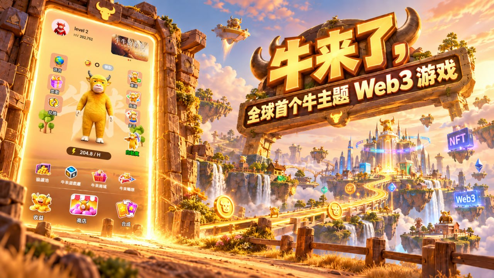
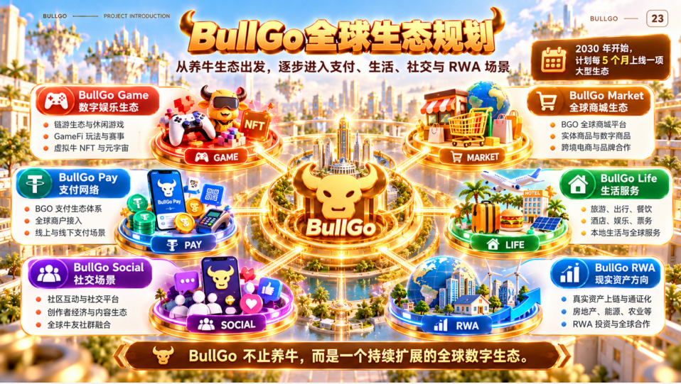

在如今的 Web3 行业中，用户和资金越来越青睐那些“轻量化入口”与“深厚生态底蕴”相结合的项目。大家既希望操作门槛足够低、体验足够轻快，又希望底层的经济机制和生态长远规划足够扎实。
近期在 BNB Chain 生态中备受瞩目的 BullGo，恰好精准踩中了这一行业趋势。作为一款集成了轻量化游戏体验与协议池生态的创新平台，BullGo 是如何凭借其独特的运行逻辑吸引大量长线参与者的？我们可以从以下三个维度来一探究竟。

一、零摩擦的流量冷启动：把“门槛”变成“体验”
对于任何链上生态而言，如何顺畅地吸纳第一批真实用户，往往决定了其后续的发展高度。
传统项目常常需要复杂的投教或高昂的资金门槛，而 BullGo 采取了一种极其聪明且友好的冷启动策略：新用户通过社区邀请机制激活账号后，即可直接获得初始的“绿牛”资产与惊喜宝箱。
这种设计的精妙之处在于，它跳过了生硬的宣讲，直接让新朋友通过零门槛的实际操作，在第一秒钟就体验到了开启宝箱、获取资产的完整流程。当互动变得轻松有趣，用户自然而然地从“旁观者”变成了“生态的共建者”，为整个社区的裂变打下了最坚实的粘性基础。
二、独具匠心的“合成升级”：让资产在互动中实现价值成长
单纯的静态产出往往缺乏长期的生命力，而 BullGo 最核心的亮点，在于其精心设计的渐进式合成进化机制。
在平台的规则设定中，玩家想要提升治理代币 $BGO 的产出效率，就需要不断将低等级的牛宠物合成为更高阶、更稀有的资产。这一机制在无形中带来了两个极佳的生态效果：
自发且持续的资产流转：玩家为了追求更高的合成效率，会自发地在生态内进行长期的资产规划与升级互动，形成了一个良性的内生循环。
清晰的成长获得感：随着手里的牛从低级迈向高级，产出效率同步提升，这种肉眼可见的养成与收获过程，极大地增强了用户的长期参与意愿与归属感。
三、依托 BNB Chain 的协议池：构建多元 Web3 应用的想象空间
如果说前端的合成玩法是吸引注意力的“高频引擎”，那么底层的协议池（Protocol Pools）则是整个 BullGo 生态的“价值锚点”。
BullGo 扎根于 BNB Chain，依托其高效、透明、低 Gas 的链上环境，将生态资金沉淀与收益分配完美融合。更为重要的是，它并非一个局限於单一玩法的单机项目，而是一个持续扩展的 Web3 应用矩阵。

随着未来更多生态板块的接入，$BGO 代币将被赋予更丰富的消耗场景与价值捕获能力。前期有人气、有协议池支撑、长远有生态拓展，这种清晰的蓝图让参与者对项目的长期发展充满了期待。
结语
纵观当下的 BNB Chain 生态，兼具轻量化趣味与严谨生态架构的项目并不多见。BullGo 凭借友好的新人机制、精妙的合成升级体验以及扎实的协议底座，正在展现出强劲的成长势头。
对于希望寻找优质生态、深度参与早期红利的建设者和探索者而言，现在无疑是一个非常值得关注的观察窗口。


暂无评论